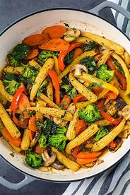
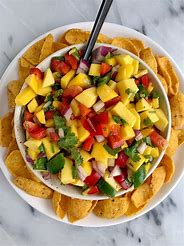
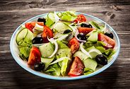

Recipes
Fruit Smoothie

- Ingredients: Banana, Berries, Yogurt, Honey
- Instructions: Blend all ingredients together until smooth. Add honey for sweetness.
Delicious Pasta

- Ingredients: Pasta, Tomato Sauce, Parmesan Cheese, Olive Oil
- Instructions: Boil the pasta, heat the sauce, mix with pasta, sprinkle cheese, and add a dash of olive oil.
Grilled Chicken Salad

- Ingredients: Chicken Breast, Lettuce, Cherry Tomatoes, Cucumber, Feta Cheese
- Instructions:Grill the chicken, chop vegetables, mix with feta, and toss everything together.
Veggie Stir Fry

- Ingredients: Broccoli, Bell Peppers, Carrots, Snap Peas, Tofu, Soy Sauce
- Instructions: Stir fry veggies and tofu in a pan, add soy sauce, and toss until everything is cooked.
Mango Salsa

- Ingredients: Mango, Red Onion, Jalapeño, Cilantro, Lime Juice
- Instructions: Dice mango, onion, and jalapeño; mix with chopped cilantro; add lime juice and stir.
Greek Salad

- Ingredients: Cucumbers, Tomatoes, Feta Cheese, Olives, Olive Oil
- Instructions: Chop vegetables and feta, mix with olives, drizzle olive oil, and toss gently.